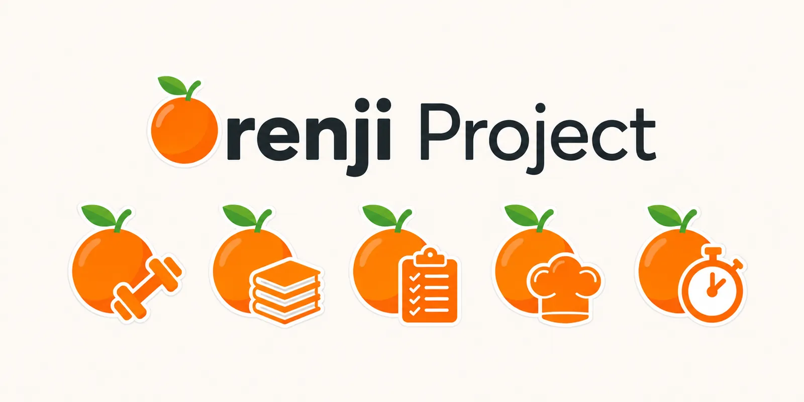

Um ecossistema para o dia a dia
Uma vida mais simples, ao natural.
Ferramentas simples e saudáveis para os teus treinos, estudos, refeições, foco e hábitos — fáceis como descascar uma laranja.

O projeto
Pequenas ferramentas para grandes rotinas.
O Orenji é um projeto de aplicações pensadas para tornar as tarefas do quotidiano mais claras, leves e fáceis de acompanhar. Cada aplicação cuida de uma rotina de cada vez — treinar, estudar, cozinhar, focar e cultivar hábitos.
O ecossistema
Escolhe o que te ajuda hoje.
Toca num ícone para saber mais.
Novidades
Estamos a preparar o próximo capítulo.
Ainda não há novidades para anunciar — mas estão a chegar em breve. Fica atento.